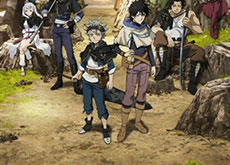

-
魔法使的新娘
-
三月的狮子
-
迷糊餐厅
-

黑色四叶草
最近更新
火影忍者 博人传
作者: 岸本齐史
更新至 12

OVERLORD
作者：丸山くがね
更新至 11

WIXOSS
作者：LRIG
更新至 12
调教咖啡厅
作者：中山幸
更新至 12
动画同好会
作者：ンスタジオ
更新至 10

我太受欢迎了
作者：ぢゅん子
更新至 10
七人传奇
作者：铃木央
更新至 10
少女终末旅行
作作者：つくみず
更新至 12
连载动画
少女终末旅行 08
8.0
播放总数：120万
十二大战 12
8.0
播放总数：120万
幻想战线 12
8.0
播放总数：120万
食戟之灵 08
8.0
播放总数：120万
少女终末旅行 07
8.0
播放总数：120万
妖精森林的小不点 01
8.0
播放总数：120万
热门搜索
海贼王
火影忍者
银魂
死神
黑色四叶草
舞动青春
调教咖啡厅
干物妹！小埋R
中二病也要谈恋爱
龙珠超
完结动画
魔法少女伊利亚-雪下的誓言
8.0播放总数：120万
夏目友人帐
8.0播放总数：120万
查理·布朗，圣诞节又到了
8.0播放总数：120万
宝石之国
8.0播放总数：120万

Fate stay night -UBW
8.0播放总数：120万

彩云国物语
8.0播放总数：120万
热门评论
-
饭丝:
好虐心啊，头，手，脚，全换了 月人哎。
来自：《宝石之国》
1天前
-
米粉:
又是一部胃疼的番剧，希望男主 女主最后能在一起。
来自：《来自风平浪静的明天》
2天前
-
饭丝:
世界上没有什么是一拳搞不定的 如果有的话，那就再来一拳。
来自：《一拳超人》
1天前
-
饭丝:
我是要当海贼王的男人。
来自：《海贼王》
3天前